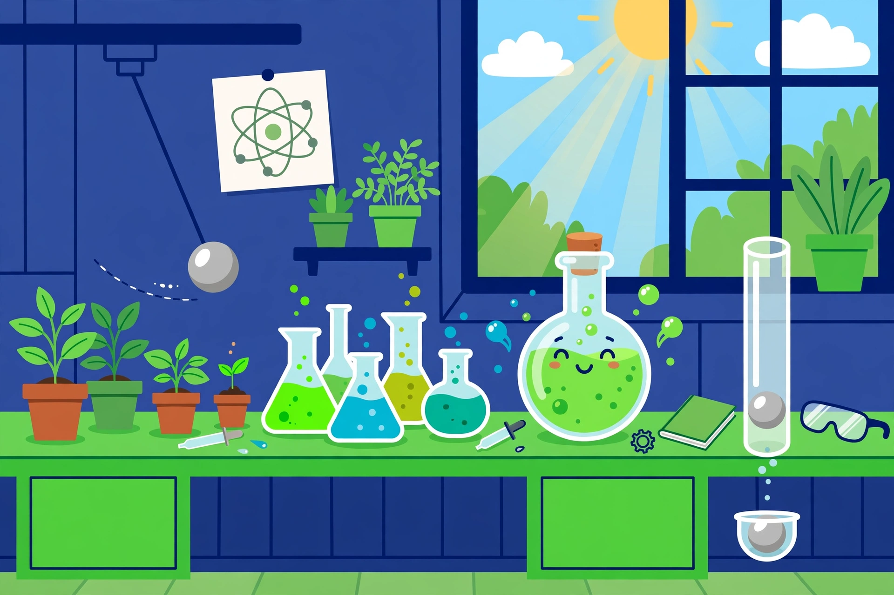

Welcome to the Laboratory — pendulums swing, steel balls drop, and every experiment is reproducible from its seed.
Meet Ernie the Erlenmeyer Flask, the mascot of this world.
The Signature Experiment Solver runs any experiment, full-scale, as a deterministic solver record: question, hypothesis, variables, materials, procedure, a three-trial matrix, findings, and conclusion. The archive holds 35,925 experiments in 9 categories and 240 types.
Two working tools, right here on the page. Each one says what it does and what it cannot do. Neither tool reaches the live web, and neither one needs a key.
Enter a drop height in metres to get the fall time in seconds, from the standard formula t = sqrt(2h/g), g = 9.8. A steel ball dropped from 10 m takes 1.43 seconds.
Height: metres.
Enter a pendulum length in metres to get the swing period in seconds, from T = 2*pi*sqrt(L/g), g = 9.8. A brass bob on a 1 m string takes 2.01 seconds per swing.
Length: metres.
Designs, printables, and demos — free, downloadable, usable on the page. Every product is labeled Signature or Fun. Nothing here is for sale.
Printable lab notebook pages: question, hypothesis, variables, materials, procedure, and a three-trial table.
Making: print the printable file, fill in one experiment per page, and keep the pages in order. The trials are models, not measurements.
A poster of the laboratory world: the pendulum swinging, the steel ball dropping, and Ernie the flask on the bench.
Making: print the printable file and pin it up. The pendulum on it is a drawing, not a working instrument.
A set of printable safety cards: goggles on, hands washed, notes kept, and seeds recorded.
Making: print the printable file on card, cut out the cards, and keep one on the bench while working.
Download all product lines as a printable (text)
Ernie the flask once bubbled so happily that the whole laboratory sang along, in the key of green. The pendulum kept the beat. (Fun — a made-up tale, not a record.)